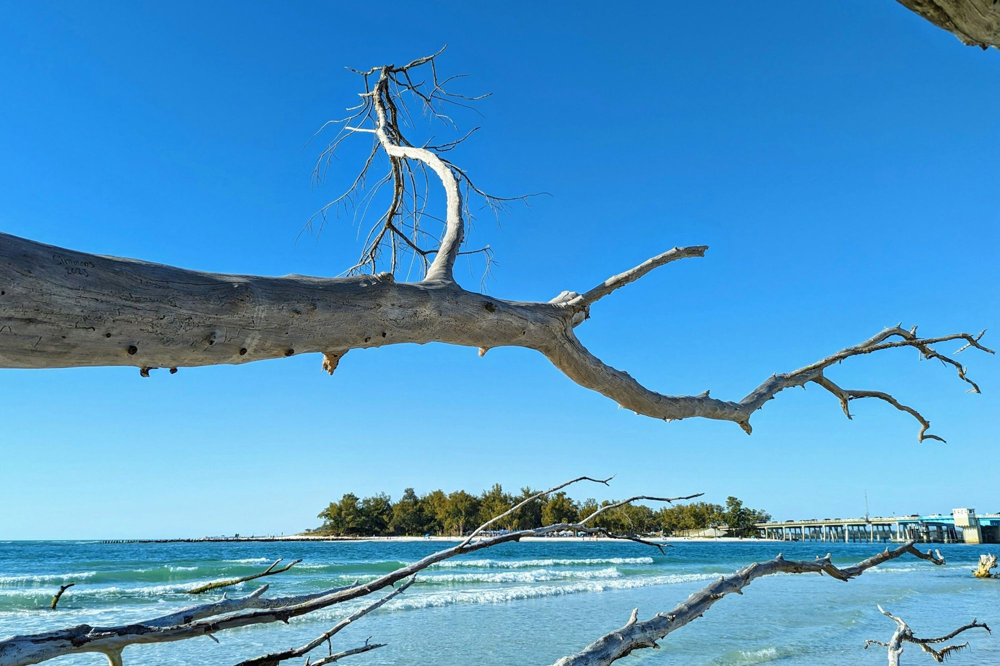

01

Lido Key and St. Armands, Sarasota
Condos and homes for sale on Lido Key, St. Armands and Bird Key, a short drive over the John Ringling Causeway from downtown Sarasota.
Lido Key and St. Armands at a glance
St. Armands Circle is the ring of shops and restaurants John and Mable Ringling planned, and Lido Beach is about a half-mile southwest of it. Three Gulf beaches line Lido Key, from North Lido to South Lido.
The Ringlings had a bridge built in 1926 to connect St. Armands Key and Bird Key to the mainland, and they brought the building materials for their planned community over on a paddle-wheel boat named Success. The Circle was first named Harding Circle, the streets of its residential section carry presidents' names, and since 1987 the Circus Ring of Fame has honored circus performers with bronze plaques in the park at its center.
15min
Sarasota Bradenton International Airport
8min
Downtown Sarasota
2min
Lido Beach
84min
Tampa International Airport
Approximate drive times from St. Armands Circle without traffic (OSRM routing, read 2026-10-23)
St. Armands Circle
Shops and restaurants around the Circus Ring of Fame and the Ringling statues
Lido Beach
Lifeguards, outdoor showers and a concession stand at the pavilion
Ted Sperling Park
South Lido's shade trees and kayak trips through the mangrove tunnels
The Bay Runner
A free trolley from Main Street downtown to the Circle and Lido Beach
Saved searches
Each card opens a live search of the MLS listings, updated as they change.
01

02

03

04
The city counts well over a hundred shops and restaurants within walking distance of each other on St. Armands Circle. In the park at its center, more than 150 bronze plaques make up the Circus Ring of Fame, and statues John Ringling bought still line the walks, restored in 2008 after the Save Our Statues project. For parking, the city keeps nearly 200 free spaces on North and South Boulevard of the Presidents, about a block from the Circle.
Lido Key has three Gulf beaches: North Lido, Lido Beach and South Lido. The main public beach, at the Lido Beach Pavilion, has lifeguards, outdoor showers, restrooms, picnic tables and a concession stand, and Visit Sarasota lists its lot among the beach lots with free parking and no time limit. In January 2026 the U.S. Army Corps of Engineers and the City of Sarasota began renourishing 1.2 miles of the shoreline with sand dredged from New Pass.
At the southern tip of Lido Key, Ted Sperling Park, also called South Lido Beach, sits where four bodies of water meet, so the currents there run swift. On land it has a tree canopy, picnic tables and a playground. On the water, kayak and paddleboard outfitters run trips through the mangrove tunnels, and the bay side of the key has a canoe and kayak launch and trail.
Bird Key’s entrance is on John Ringling Boulevard, where a historical marker unveiled in 2013 honors New Edzell Castle, the island’s first mansion. Arvida Corporation bought the island in 1959, dredged and filled it to make it larger, and built the Bird Key Yacht Club on the mansion’s site in 1960. Ryan and Katie keep separate saved searches for Bird Key and for Lido Shores, so you can watch either one without the rest of the keys mixed in, and their Sarasota Condos page covers the condo buildings.
The John Ringling Causeway links the keys with the mainland, and the bridge you cross today opened to traffic on September 15, 2003. Without a car, the free Bay Runner trolley runs seven days a week between Main Street downtown, St. Armands Circle, Lido Beach and South Lido Park, and Breeze OnDemand minivans give curb-to-curb rides between downtown, St. Armands, Lido Key and Longboat Key. From the Circle, the road north carries on to Longboat Key.
Day to day
School information is factual and by district. Always confirm a specific address in the district's school finder.
In their words
Lido Key and St. Armands are where beach life gets a little dressed up. Walk to the sand, grab dinner or shop around the Circle, then be downtown Sarasota in minutes. Nearby Bird Key adds another layer of luxury waterfront living, making this one of the area’s most desirable coastal addresses.
Katie and Ryan Sherman
Questions
The main public beach at the Lido Beach Pavilion has lifeguards, along with outdoor showers, restrooms and a concession stand. At South Lido, in Ted Sperling Park, four bodies of water meet and the currents run swift, so read the posted conditions before you swim there.
The city keeps nearly 200 free, unrestricted spaces on North and South Boulevard of the Presidents, about a block from the Circle. In the neighborhoods next to it, a one-hour limit applies Monday through Saturday from 9 a.m. to 8 p.m., but not on Sundays or city holidays.
Yes. The free Bay Runner trolley runs between Main Street downtown and Lido Key, with stops at St. Armands Circle, Lido Beach and South Lido Park. Breeze OnDemand minivans also give curb-to-curb rides from downtown to St. Armands, Lido Key and Longboat Key.
Sarasota County Schools, the one public school district for all of Sarasota County. Confirm the school for any address with the district, since attendance zones change.
Nearby



Resources
Contact
Call Katie at 321-429-9031 or send a note about the condo, the street or the island you have in mind.